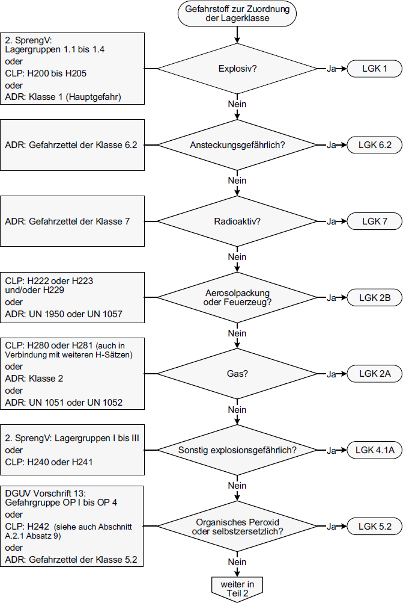
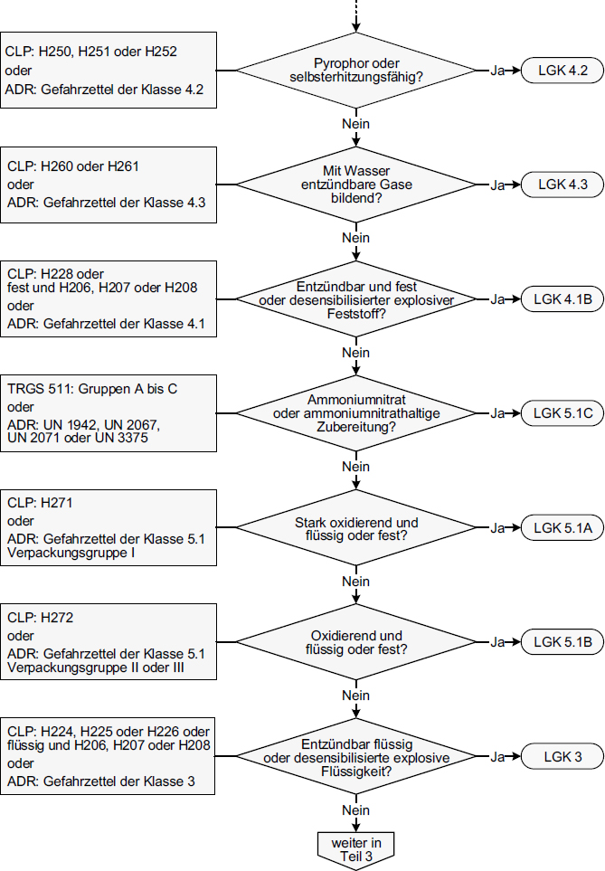
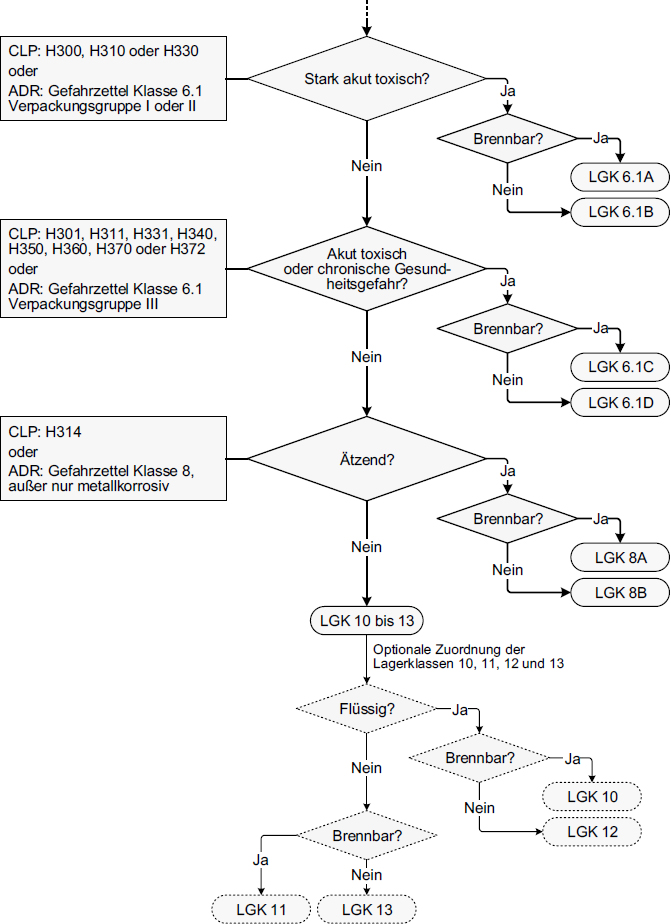

(1) Zur Festlegung der Zusammenlagerungsmöglichkeiten können Gefahrstoffen Lagerklassen (LGK) zugeordnet werden. Sie dienen ausschließlich der Steuerung der Zusammenlagerung, siehe dazu Abschnitt 13.3.
(2) Die Beschreibung der Lagerklassen basiert primär auf der Einstufung nach der CLP-Verordnung sowie nach Gefahrgutrecht. Zusätzlich werden weitere Eigenschaften, z. B. nach weiteren rechtlichen Vorschriften, dem Technischen Regelwerk für Gefahrstoffe (TRGS) und allgemeine Produkteigenschaften berücksichtigt.
(3) Die Zuordnung einer Lagerklasse zu einem Gefahrstoff erfolgt anhand verfügbarer Informationen. Quellen hierzu sind insbesondere Angaben im Sicherheitsdatenblatt und die gefahrstoff- bzw. gefahrgutrechtlichen Kennzeichnungen. Bei nicht als gefährlich zu kennzeichnenden Gefahrstoffen können Informationen des Lieferanten oder Erkenntnisse aufgrund praktischer Erfahrungen herangezogen werden.
(4) Bei der Kennzeichnung nach Gefahrgutrecht sind sowohl die Hauptgefahr als auch Nebengefahren zu berücksichtigen.
(5) In einer Lagerklasse werden Gefahrstoffe mit solchen Eigenschaften zusammengefasst, die als gleichartig angesehen werden und folglich gleichartige Schutzmaßnahmen erfordern.
(6) Der Zuordnungsleitfaden gemäß Abschnitt A.2.2 führt die Einstufungen/Kennzeichnungen bzw. gefährlichen Eigenschaften auf, die für die Lagerklassenzuordnung bestimmend sind.
(7) Die Lagerklasse ergibt sich aus der Einstufung/Kennzeichnung bzw. gefährlichen Eigenschaft, die im Fließschema in Abschnitt A.2.2 als erstes zutrifft.
(8) Jedem Gefahrstoff wird nur eine Lagerklasse zugeordnet.
(9) Selbstzersetzliche Stoffe der Gefahrgutklasse 4.1 sind (wegen ihrer den organischen Peroxiden vergleichbaren Eigenschaften genau wie diese) LGK 4.1A oder LGK 5.2 und nicht LGK 4.1B zuzuordnen. Andere Gefahrstoffe, die nach Gefahrgutrecht der Klasse 4.1 angehören, aber z. B. keine entzündbaren Feststoffe, Kat. 1 oder 2, H228 sind, bedürfen einer Einzelfallbetrachtung (z. B. Paraformaldehyd, polymerisierende Stoffe).
(10) LGK 9 ist nicht besetzt.
(11) LGK 10 werden alle brennbaren Flüssigkeiten und LGK 11 alle brennbaren Feststoffe zugeordnet, die nicht einer der LGKn 1 bis 8 zugeordnet sind.
(12) Abweichend von Absatz 11 dürfen Flüssigkeiten, die gemäß L.2 Prüfung nach den UN-Empfehlungen für die Beförderung gefährlicher Güter, Handbuch über Prüfungen und Kriterien, Teil III Abschnitt 32 nicht selbstunterhaltend verbrennen, für die Festlegung der Zusammenlagerungsmöglichkeiten gemäß Abschnitt 13 der LGK 12 zugeordnet werden.
(13) Sofern bei der Getrenntlagerung Barrieren aus nicht brennbaren Stoffen/Produkten gebildet werden, ist ihre Einstufung in die LGK 12 oder 13 erforderlich.

Abbildung 2.1 Fließschema zur Zuordnung der Lagerklassen, Teil 1

Abbildung 2.2 Fließschema zur Zuordnung der Lagerklassen, Teil 2

Abbildung 2.3 Fließschema zur Zuordnung der Lagerklassen, Teil 3